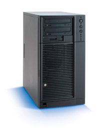

| Internet
Server Platform |
suplied modules examples why I did this |
| Is a software platform
designed to be widely used in servers that will have to serve different
contents and propose different services. Features: - ultra easy configuration. - secures even content or applications that were not supposed(designed) to be secure - based on mature enough code that was tested for about 10 years in a open source way - can incorporate any kind of services that you can think of - for fast and clean web-apps development it comes also with a framework that allows to do more than sites Ideas behind: - simple as possible, and not making big theories from basic things Design: - designed to be a general purpose serving horse while incorporating many different by nature applications - uses plugin-approach to let written applications to think of internet or its services and posibilities as kind of an object that can be used internally by the application - an application written for the platform may benefit from the platform by gaining acces for free to resources of flexible capabilities |
 |